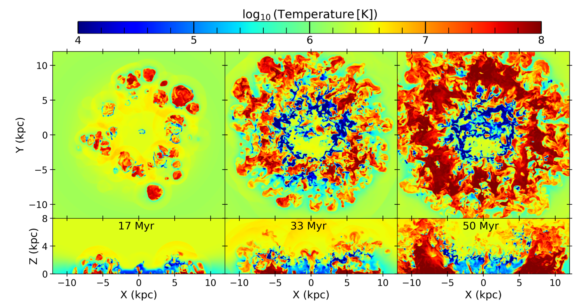
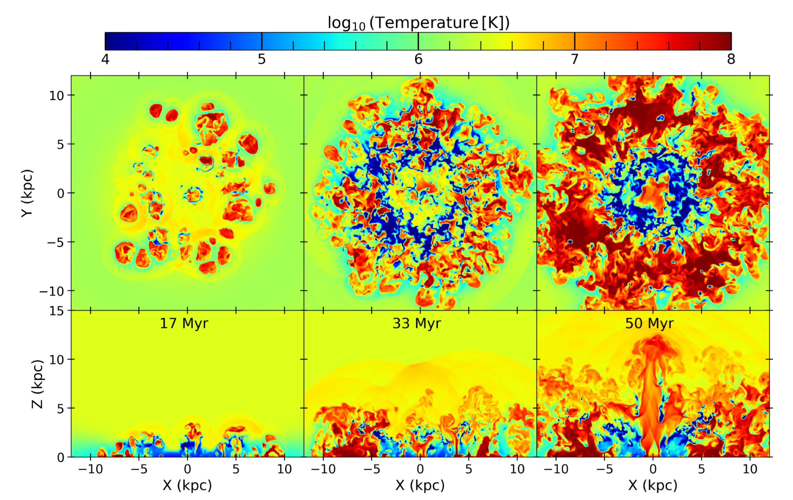
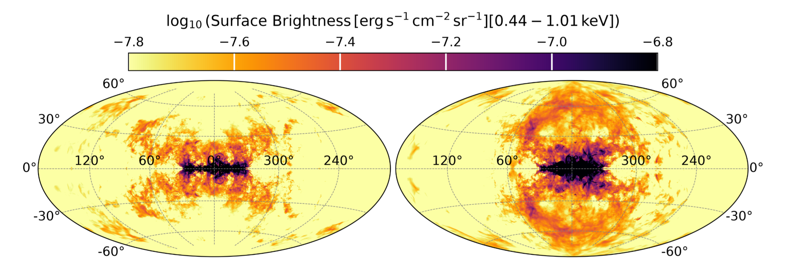

Imagina que pudieras ver el cielo con ojos de rayos X. Las estrellas de siempre se apagarían y, en su lugar, aparecería algo que ningún ser humano vio hasta hace pocos años: dos burbujas colosales que salen del centro de nuestra galaxia, una hacia arriba y otra hacia abajo, como si la Vía Láctea hubiera soplado una burbuja de jabón del tamaño de decenas de miles de años luz.
No es ciencia ficción. En 2020, el telescopio espacial eROSITA reveló estas estructuras, que hoy se conocen como burbujas de eROSITA. Son enormes nubes de gas a millones de grados que brillan en rayos X y envuelven a otro par de burbujas ya famosas: las burbujas de Fermi, que se ven en rayos gamma. Una parte de ellas incluso se conocía desde los años 90 como el “Espolón Polar Norte”, aunque nadie sospechaba que fuera apenas la punta de un iceberg cósmico.
La pregunta obvia es la que vuelve locos a los astrónomos: ¿qué las creó?
Esquema conceptual: ¿Qué observamos en la Vía Láctea?
Pasa el cursor o selecciona cada estructura del esquema para explorar su papel y comparar su escala frente al disco estelar.
Dos sospechosos para un mismo misterio
Cuando miramos una nube difusa de gas brillante en rayos X, es muy difícil distinguir si es algo gigantesco y lejano (en el centro de la galaxia) o algo más pequeño y cercano a nosotros.
Esta incertidumbre dividió a los astrónomos en dos bandos con explicaciones muy diferentes, el primero es Sagitario A*, el agujero negro supermasivo que vive en el corazón de la Vía Láctea. Hoy está tranquilo, pero pudo haber tenido un “ataque de hambre” en el pasado y expulsado una enorme cantidad de energía. El segundo es un brote intenso de formación de estrellas en el núcleo galáctico, cuyas supernovas y vientos estelares habrían empujado el gas hacia afuera.
Pero en 2024 apareció un giro inesperado. Dos equipos de investigación propusieron que las burbujas no vienen del centro. Según ellos, serían columnas de gas caliente que suben desde un anillo de formación estelar situado a unos 16.000 años luz del centro galáctico. Esas columnas se superpondrían y, vistas desde la Tierra, parecerían dos burbujas. Si tenían razón, gran parte de lo que creíamos saber sobre la historia de nuestro núcleo galáctico tendría que reescribirse.
Sagitario A* o brote nuclear
Inyección compacta de energía desde el corazón de la Vía Láctea.Anillo estelar a ~16.000 años luz
Columnas de gas caliente que parecen burbujas por perspectiva.Recrear una galaxia en un computador
Los astrofísicos Mukesh Singh Bisht y Kartick C. Sarkar decidieron poner esa idea a prueba de la única forma posible cuando no se puede viajar al lugar de los sucesos, simulando la galaxia entera.
Con el código PLUTO construyeron una Vía Láctea virtual en tres dimensiones, con su disco de gas en rotación, un halo de gas caliente alrededor y la gravedad de la materia oscura. Después la llenaron de vida. Miles de cúmulos de estrellas nacían al azar, sobre todo en el famoso anillo a ~5 kpc, giraban con la galaxia y liberaban la energía de sus supernovas, tal como predicen los modelos de evolución estelar.
Hicieron dos versiones del experimento. En la primera, solo había formación estelar repartida por el disco. En la segunda añadieron además una potente fuente de energía en el centro galáctico. Luego dejaron evolucionar ambas galaxias durante 50 millones de años y, al final, se pusieron en el lugar del Sol para “fotografiar” el cielo en rayos X, igual que lo hace eROSITA.
Evolución de la temperatura del gas en la Vía Láctea (17, 33 y 50 millones de años)


Paso decisivo
Se decidió colocar una cámara virtual de rayos X en la posición del Sistema Solar (a unos 8 kpc del centro galáctico) y generar un mapa de todo el cielo, tal como lo ven los telescopios espaciales desde nuestra órbita. El resultado se muestra en la siguiente figura:
Mapa de brillo superficial en rayos X visto desde la posición del Sol

En el panel izquierdo con solo el anillo de 5 kpc no hay rastros de las burbujas gigantes, solo se logra observar arcos pequeños y desordenados cerca del plano central; el anillo de estrellas es incapaz de inflar estructuras coherentes hacia los polos galácticos.
Pero, ahora enfocándonos en el panel de la derecha que incluye el anillo y el centro galáctico, sí aparecen las burbujas, que se visualizan como dos lóbulos colosales que emergen hacia arriba y hacia abajo del centro, con el brillo y el borde afilado que observan los telescopios reales.
El veredicto
En la galaxia sin fuente central, el anillo estelar sí produjo algo llamativo: unas chimeneas de gas a decenas de millones de grados que subían como cuernos. Pero ese gas era tan tenue que casi no brillaba en rayos X, y no tenía los bordes afilados que caracterizan a las burbujas reales. En el mapa del cielo solo aparecieron manchas sueltas, nada parecido a dos burbujas.
Los autores no se rindieron fácilmente. Movieron al Sol a doce posiciones distintas de la galaxia, aumentaron diez veces la cantidad de metales del gas para hacerlo más brillante y observaron en cinco bandas de rayos X diferentes. El resultado fue siempre el mismo: ni rastro de burbujas.
En cambio, cuando encendieron la fuente central, el cielo simulado mostró dos estructuras gigantescas de unos 80 grados, con bordes nítidos y un brillo muy parecido al de las burbujas de eROSITA reales. Hubo además un detalle curioso: las burbujas solo se veían bien desde aproximadamente la mitad de las posiciones posibles del Sol. Quizás tenemos la suerte de estar en un buen sitio para contemplarlas.
La conclusión es clara para este estudio, un anillo de estrellas no basta; las burbujas necesitan un motor en el corazón de la galaxia.
Lo que viene
El caso no está cerrado del todo. El estudio está en proceso, y las simulaciones solo incluyen el comportamiento del gas. Los autores quieren añadir campos magnéticos y rayos cósmicos para predecir cómo se verían las burbujas en ondas de radio, que es precisamente la evidencia en la que se apoyaba la hipótesis rival. También quieren construir mapas sintéticos en rayos gamma para compararlos con las burbujas de Fermi.
Mientras tanto, la Vía Láctea sigue guardando su secreto: hace unos 20 o 30 millones de años, algo en su centro, ya sea un agujero negro hambriento o una explosión de estrellas, sopló con la fuerza suficiente para inflar las burbujas más grandes que conocemos en nuestra galaxia. Y nosotros, desde un rincón tranquilo del disco, apenas estamos empezando a entender qué pasó.